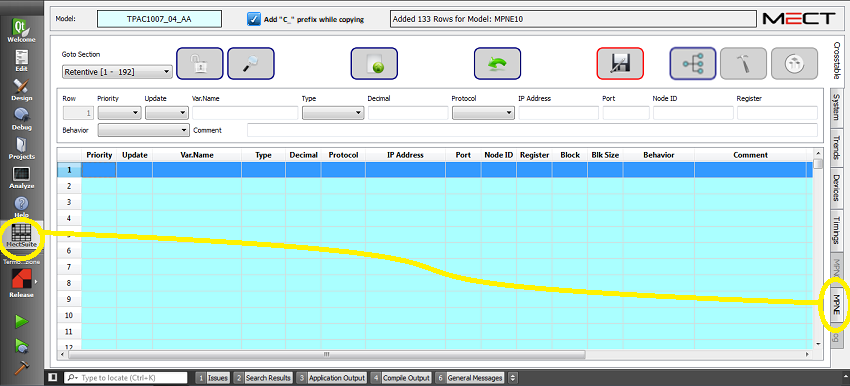

Der Fernmodulenkonfigurator ist ein grafisches Werkzeug, mit dem die Konfiguration des Automatisierungssystems definiert werden kann, und nach der Definition des Moduls SPS oder Mect Bedienfeld, ermöglicht er die Konfiguration der “MPNE” Fernknoten und ihrer für die Anwendung nützlichen Variablen.
Der MPNE Fernknoten Grafikeditor ist nur dann sichtbar, wenn mindestens ein Modul der MPNE-Familie in das Projekt eingefügt wurde.

Um ein Modul einzufügen, drücken Sie die rechte Maustaste in einer Reihe des Crosstable und wählen Sie “Paste MPNE10 Module”.
Im folgenden Fenster können Sie die Adresse des von Ihnen verwendeten Knotens einstellen. Wenn das Mect Gerat über mehrere RTU-Ports verfügt, können Sie den Port dem Knoten zuordnen. Diese Einstellungen können auch nachträglich im Grafikeditor geändert werden.

Die Schnittstelle ist wie folgt:

Im Feld “Model” erscheint der Code der SPS oder des Mect Bedienfelds.
Im Feld “MPNE10” können Sie den Knoten auswählen, der für die Systemkonfiguration verwendet werdensoll. Die Auswahl ist mehrfach, wenn mehrere entfernte Knoten zur gleichen SPS oder zum gleichen Bedienfeld kombiniert werden.
Das Feld “Port” ist aktiviert, wenn das PLC oder Mect Bedienfeld Modell über mehr als eine serielle 485-Ports verfügt und die Wahl des Port ermöglicht, mit der der entfernte Knoten verbunden werden soll.
Das Feld “Node Id” ist die Adresse des entfernten Knotens und kann vom Benutzer definiert werden.
Mit der quadratischen Taste  können Sie die den Modulen zugeordneten Variablen umbenennen,indem Sie das vom System standardmäßig vergebene Präfix “MPNE_” und das für alle Module gleich ändern.
können Sie die den Modulen zugeordneten Variablen umbenennen,indem Sie das vom System standardmäßig vergebene Präfix “MPNE_” und das für alle Module gleich ändern.
Das Feld “Exp1” definiert die Konfiguration des Erweiterungsmoduls Nr. 1 zwischen: “no Module, 8 Digital Input, 8 Digital Output, 2 AI – 1 AO”.
Das Feld “Exp2” definiert die Konfiguration des Erweiterungsmoduls Nr. 2 zwischen: “no Module, 8 Digital Input, 8 Digital Output, 2 AI – 1 AO”.
Hinweis: Im Grafikeditor werden die Ausgangsmodule mit 4 oder 8 Relais des MPNE-Moduls nicht in die Auswahl einbezogen, da sie der Erweiterung "8 Digital Output" entsprechen.
Die three-state Taste  ermöglicht es Ihnen, die Variablen in der Liste zu filtern und besteht aus drei Teilen: einem dunkelgrauen, einem hellgrauen und einem blauen.
Je nach Status werden verschiedene Variablen angezeigt:
ermöglicht es Ihnen, die Variablen in der Liste zu filtern und besteht aus drei Teilen: einem dunkelgrauen, einem hellgrauen und einem blauen.
Je nach Status werden verschiedene Variablen angezeigt:
 Die Taste nur bei aktiviertem Dunkelgrau zeigt NUR die Variablen des Basisboards an.
Die Taste nur bei aktiviertem Dunkelgrau zeigt NUR die Variablen des Basisboards an.
 Die Taste mit aktiviertem Dunkelgrau und Hellgrau zeigt die Variablen des Basisboards und die Variablen der anderen im System verwendeten Erweiterungsmodule an.
Die Taste mit aktiviertem Dunkelgrau und Hellgrau zeigt die Variablen des Basisboards und die Variablen der anderen im System verwendeten Erweiterungsmodule an.
 Die Taste mit aktiviertem Dunkelgrau,Hellgrau und Hellblau zeigt die Variablen des Basisboards, die Variablen der anderen verwendeten Erweiterungsmodule und die Variablen, die
noch keiner Erweiterung zugeordnet sind, aber im System verwendet werden können.
Die Taste mit aktiviertem Dunkelgrau,Hellgrau und Hellblau zeigt die Variablen des Basisboards, die Variablen der anderen verwendeten Erweiterungsmodule und die Variablen, die
noch keiner Erweiterung zugeordnet sind, aber im System verwendet werden können.
Beim Einfügen eines neuen Moduls werden die Variablen der eingefügten Module automatisch aktiviert und in der folgenden Tabelle angezeigt.
Um die den anderen Modulen zugeordneten Variablen anzuzeigen, verwenden Sie die three-State Taste  .
.
Durch Anklicken eines der im System eingefügten Modul werden nur die Variablen des ausgewählten Moduls in der Tabelle angezeigt.
Die Tabelle befindet sich im READ-ONLY-Modus. Durch Anklicken der gewünschten Variable gelangen Sie direkt in den Crosstable-Editor, wo Sie die Daten ändern können.